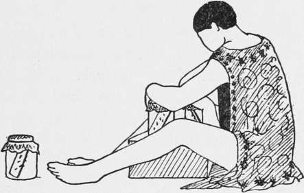

Technic
Description
This section is from the book "Malaria, Influenza And Dengue", by Julius Mennaberg and O. Leichtenstern. Also available from Amazon: Malaria, influenza and dengue.
Technic
Capture Of Anophelinae
This can be effected in two ways: (1) By capture of the winged insects; (2) by breeding out from larvae and nymphse. Nothing less than personal investigation will suffice to give an accurate idea of the distribution of Anophelince. Search must be made in the huts of the aborigines in the tropics: the darkest corners of the hut must be carefully scanned, and soot and cobwebs must be braved if Anophelince are to be detected. Cow sheds, outhouses, stables, the eaves of huts, all should be searched. The most certain way of detecting mosquitos in thatch, where they are often difficult to see, is to prod it with a stick, when the mosquitos, if present, at once fly out. The mosquitos are captured by very slowly placing a specimen tube, about half an inch in diameter, over them. The orifice is plugged with wool, and the mosquito is transferred to a dry bottle also plugged with wool. Anophelince may sometimes be found in loose hay or dried grass stored in outhouses, in astonishing numbers.
Capture Of Larvae
Larvae must be sought in every possible source of water. It must never be taken for granted that any source of water, however unlikely, is free from Anophelince. Inspection is not sufficient. Dipping alone will prove the absence or presence of larvae. For this purpose an enameled cup or tin mug is the most convenient apparatus; a net or other device is seldom necessary. The cup is dipped suddenly into the water, and weeds, debris, and water are all brought up together. Then allow a little time to elapse -the larvae or pupae come to the top. They are best lifted out with a teaspoon and placed in the collecting vessel or tube containing water.
Breeding Out Mosquitos
Place the larvae or pupae in a jar or wide mouthed bottle half full of water. Cover with a lid, the central portion of which is replaced by netting. By naked eye inspection and more exactly by examining under the microscope, as previously described, the various species may be separated. Place the bottle in a good light, but the water must not become too hot. Remove the pupae as they develop, and place in separate jars. If larvae are raised from the egg, it is necessary to provide them in the laboratory with plenty of food, such as they get in nature, and to see that they are frequently supplied with natural water and weeds, otherwise their development is extremely slow.
Mounting Of Mosquitos
As the winged insects hatch out, slip a piece of paper under the lid and place the lid on the table with the paper uppermost. Then place a glass jar over it and remove the paper. The anophelines are then inside the jar, and may be killed with chloroform, tobacco, or cyanid. Some few hours should be allowed to elapse before killing anophelines after they have hatched, in order to allow of their wings hardening. After killing, place the mosquito on a clean sheet of paper. Turn it over with a pin on its back. Previously pierce a card board disk about as big as a silver quarter dollar with a fine silver entomologic pin (No. 1). Then pass the pin into the thorax of the mosquito, in the region of the legs, causing it to emerge on the dorsum. Now lift the transfixed mosquito and push the pin a little further through by pressing against a piece of cork or tissue paper, so as to damage the scales as little as possible. The mosquito is now mounted on the disk. Now transfix the disk at the edge with an ordinary stout pin, passing it in the opposite direction to the fine silver pin. The legs and wings may then be arranged symmetrically, using a pin only for touching the mosquito. Finally place the specimen in a collecting box or pin on to a cork, and insert the cork into a specimen tube; the mosquito is thus inside, and is protected from dust and damp, and, should injury befall it, all the parts will be still preserved inside the tube.
Keeping Mosquitos Alive
Mosquitos other than the anophelines can be kept alive by feeding on fruit juices, such as bananas, dates, sugary water containing a little sherry, etc., and it is noteworthy that mosquitos will often live longer in a closed jar, even when corked, than in a cage covered with netting. From a considerable experience with anophelines in feeding experiments in the tropics Christophers and myself found it advisable not to use a cage, but to keep our mosquitos in bottles. One of the most convenient methods is to use a bottle with a hollow stopper into which some water is placed. The jar is inverted, and a piece of cork is placed on the water; on the cork is placed a piece of white paper. This serves as a resting place for the mosquitos during oviposition. Further, a piece of card board is forced into the jar, so that it rests on the neck inside. This serves as a support for the mosquitos to rest upon. Such a jar is ready for feeding experiments.
Feeding Anophelines On The Blood Of Patients
The jar, prepared as above, has the stopper removed; it is then placed above the vessel in which the insects have hatched out, and the mosquitos transferred from the latter to the former. A piece of mosquito netting is next tied over the mouth, and the jar is ready. According to various observers, twenty four hours must elapse before the mosquitos are ready to bite after they have been hatched. Twenty to thirty mosquitos are used for the experiment, which is begun about dusk or later. The arm of the patient is now firmly applied over the mouth of the jar, and it will be found that the mosquitos will bite readily through the netting. Allow all the mosquitos to feed. If the mosquitos are hungry, splashes of blood passed per anum will be seen on the sides of the bottle. After feeding, remove the netting and replace the stopper, and place in an incubator at about 80° F. Any mosquitos, e. g., males, that are found dead next day may be removed, and eggs that have been laid may be collected. Fresh water should be supplied every morning. The bottle should be labeled, and the time of feeding, etc., carefully noted on the label.
Fig. 11.-Method of Feeding Mosquitos (from Stephens and Christophers' " Practical Study of Malaria ").
To Examine Fed Mosquitos
Place the bottle containing the mosquitos aside, or capture as many as required and place in another bottle. Keep them in the incubator until they have digested all their meal of blood; this is known by the complete disappearance of the black contents of the stomach and by the feces becoming white. Mosquitos containing undigested blood in their stomachs are difficult to dissect, and unsatisfactory results will be obtained unless this precaution is taken.
Continue to:
- prev: The Relation Of The Anophelin To Malarial Endemicity. Part 3
- Table of Contents
- next: Dissection Of Mosquitos
Tags
mosquito, malaria, influenza, dengue, symptoms, outbreaks, diseases, hemoglobinuria, infections